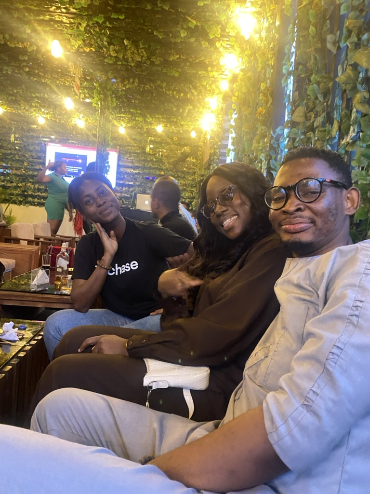

The Vibrant Life of Gbenga
Who Am I?
I’m [Your Name], a storyteller, explorer, and a curious soul who finds joy in the little things. Whether it’s diving into creative projects, sharing unique experiences, or connecting with people, my life is a kaleidoscope of interesting moments that I love to share with the world.
My Favorite Things
- Music That Moves Me:
- Snapshots of My Adventures:
- Videos That Speak Volumes:
Nothing sparks creativity like my curated playlist of soulful tunes, upbeat tracks, and timeless classics. Check out my Spotify playlist for a glimpse into my world of sound. 🎶
Every picture tells a story, and my gallery is full of them—from sunsets on Lagos beaches to cozy evenings in Yaba.
I am not a video person, but at least, enjoy these short masterpieces
Why I’m Interesting
- I connect deeply with people through meaningful conversations.
- I turn everyday experiences into moments of learning and inspiration.
- My perspective blends my Nigerian roots and global experiences, making every story uniquely mine.
Join My Journey
Let’s explore, create, and share life together. Whether it’s through music, visuals, or words, I’m here to bring something new and refreshing to your feed.
Follow me for more insights into my colorful world!